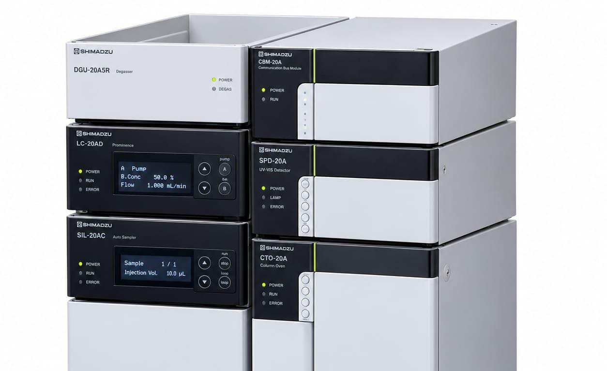
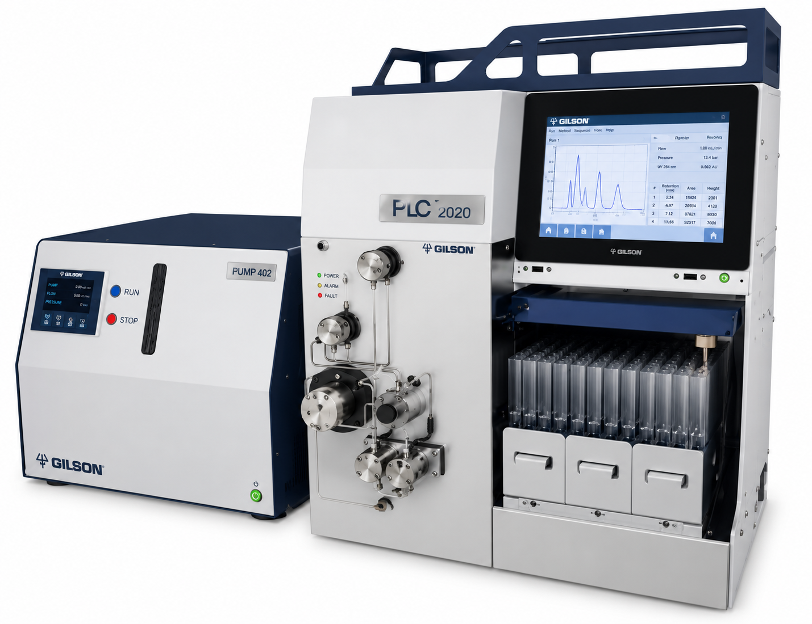
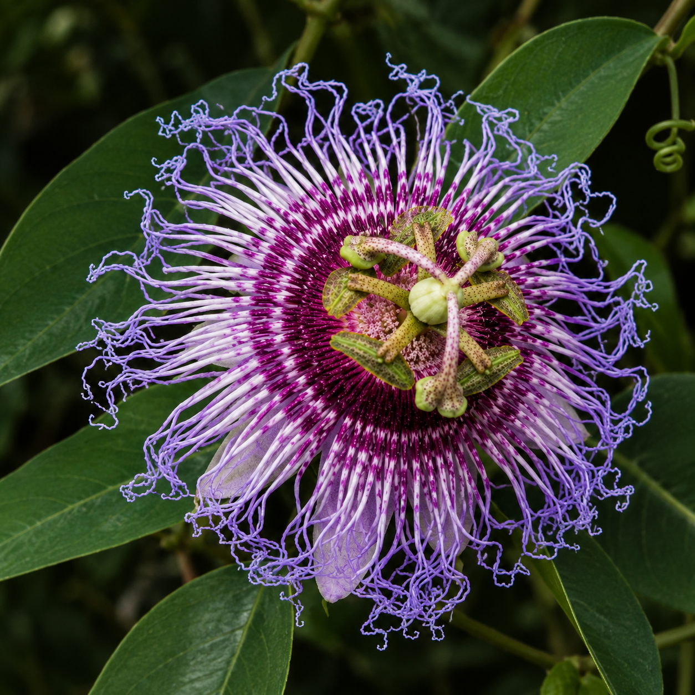
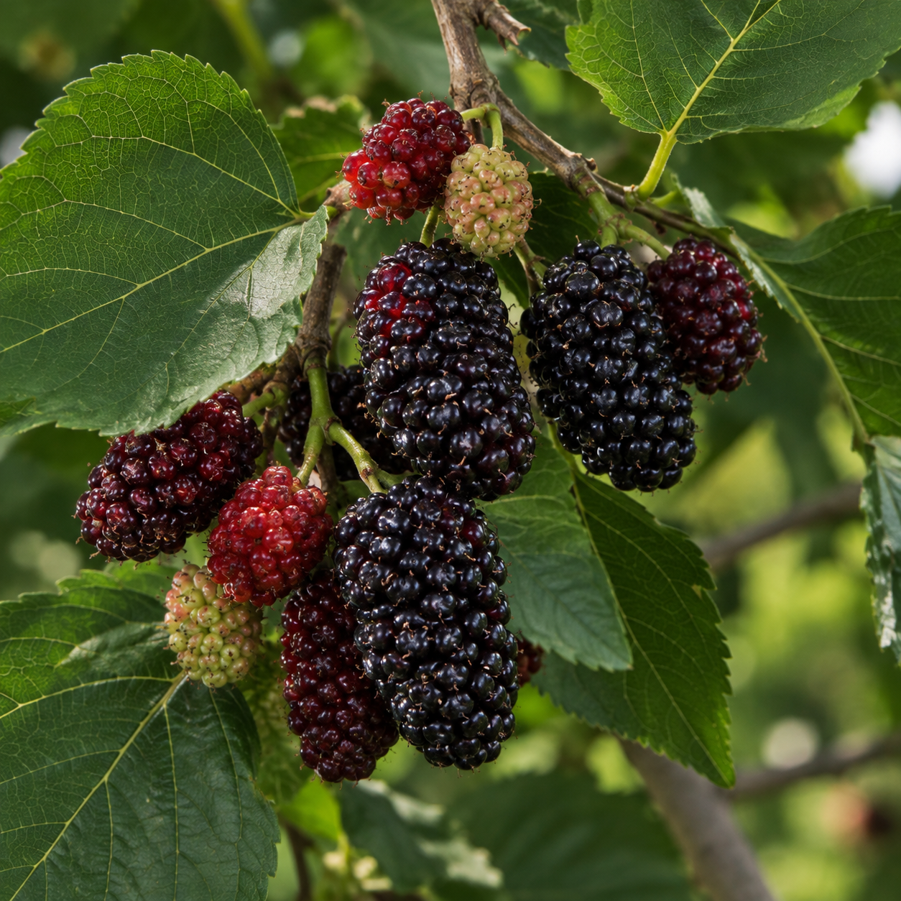
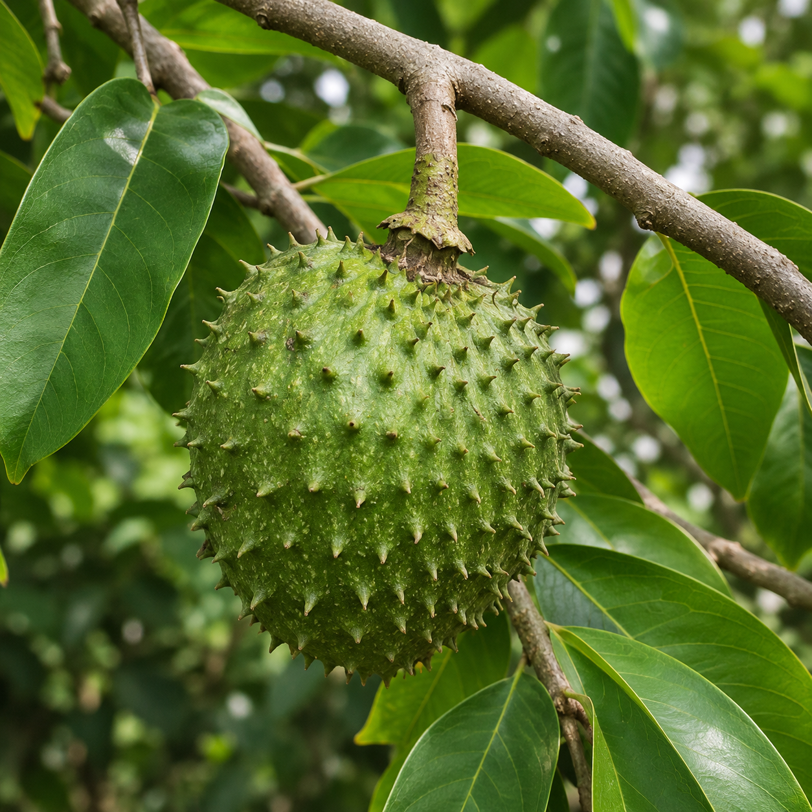
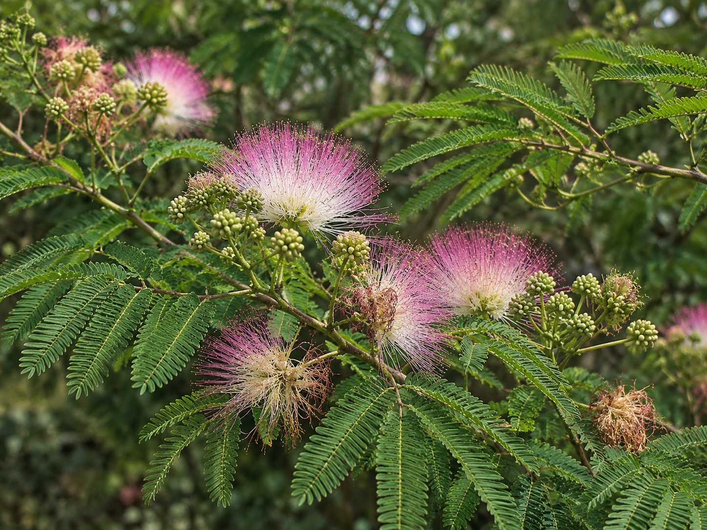

.png) Biotecnologia & Análises Laboratoriais de Precisão
Biotecnologia & Análises Laboratoriais de Precisão
"FitoEx, onde a essência da natureza encontra a precisão da ciência."
Desenvolvemos e caracterizamos insumos botânicos com rigor tecnológico. Realizamos ensaios analíticos completos utilizando equipamentos modernos de cromatografia e espectrometria diretamente na região.
Técnicas e Equipamentos Disponíveis:
Capacidade Analítica LocalCromatografia Líquida de Alta Eficiência
Quantificação & Qualificação →Cromatografia Líquida acoplada à Espectrometria de Massas
Massa Molecular Exata →Ressonância Magnética Nuclear
Elucidação Estrutural →Aplicador de Amostras Linomat 5
Fingerprint Automatizado →Cromatografia de Partição Centrífuga
Purificação de Ativos →Cromatografia em Camada Delgada Analítica & Preparativa
Triagem Fitoquímica →Espectrofotometria & Revelação UV
Varredura de Banda →Espectroscopia de Absorção no Infravermelho
Identificação de Grupos Funcionais Moleculares →Modelagem de arranjo tridimensional do ativo fitoquímico purificado.
A FitoEx revoluciona o mercado regional atuando como hub local de biotecnologia. Elimine os altos custos, burocracias e o risco de degradação de amostras associados ao envio para grandes centros distantes ou laboratórios no exterior.
Utilizamos métodos de extração limpos e reagentes de baixo impacto ambiental, valorizando a biodiversidade com responsabilidade ecológica.
Atendemos indústrias, farmácias de manipulação e centros de pesquisa da região com prazos reduzidos e suporte técnico direto.
Garantimos rastreamento completo desde a matéria-prima vegetal até a emissão do laudo cromatográfico e espectrométrico final.
Equipamentos e Serviços Laboratoriais
Técnicas consolidadas e avançadas para caracterização estrutural, purificação e controle de qualidade de matrizes complexas.

CromatografiaSeparação, Quantificação e Caracterização
O que é e o que faz: Separa e quantifica compostos em misturas líquidas sob alta pressão com extrema sensibilidade.
Importância no P&D: Fundamental para dosagem de princípios ativos (marcadores) em extratos e insumos vegetais.
Vantagens: Alta reprodutibilidade, precisão quantitativa e rapidez de análise.
 Espectrometria
Espectrometria
Identificação de Massa & Estrutura
O que é e o que faz: Acopla a separação do HPLC à identificação da razão massa/carga de moléculas.
Importância no P&D: Determina peso molecular exato de metabolitos raros e desconhecidos em misturas complexas.
Vantagens: Sensibilidade ultraelevada e altíssima seletividade analítica.
 Espectroscopia
Espectroscopia
Elucidação Estrutural Completa
O que é e o que faz: Analisa o ambiente magnético de núcleos atômicos (como ¹H e ¹³C) para detalhar arranjos moleculares.
Importância no P&D: Padrão-ouro na confirmação inquestionável da estrutura química de novos ativos.
Vantagens: Não destrutivo e fornece mapa tridimensional da molécula.
 Automatizado
Automatizado
Aplicação Automatizada em Faixas
O que é e o que faz: O Linomat 5 aplica amostras em banda de forma precisa por pulverização com N₂ em placas de HPTLC.
Importância no P&D: Garante resolução máxima na análise fingerprint de extratos vegetais sem sobrecarga.
Vantagens: Reprodutibilidade superior, economiza reagentes e minimiza erro humano.

PurificaçãoPurificação Sem Fase Sólida
O que é e o que faz: Separação líquido-líquido baseada no coeficiente de partição mantida por força centrífuga.
Importância no P&D: Isolamento em escala preparativa de moléculas de alto valor sem perda do produto na sílica.
Vantagens: 100% de recuperação da amostra, sem degradação ou adsorção irreversível.
 Óptica
Óptica
Varredura e Grupos Funcionais
O que é e o que faz: Medem absorção de radiação ultravioleta, visível e infravermelha para identificar grupos funcionais e revelação em placas de CCDA/CCDP.
Importância no P&D: Triagem rápida de compostos fenólicos, flavonoides e identificação de impressões digitais moleculares.
Vantagens: Análise instantânea, baixo custo por ensaio e alta confiabilidade.
Extraímos e analisamos metabólitos secundários de plantas com alto apelo farmacológico, dermo-cosmético e nutracêutico. Veja algumas das plantas com as quais trabalhamos. Consulte-nos para saber mais!

Maracujá-da-caatingaUsos Farmacológicos: Ação ansiolítica, sedativa leve, fitoterápico para controle do estresse e insônia.
Usos Cosméticos: Controle da oleosidade cutânea, ação antioxidante e calmante para peles sensíveis.

Amoreira-negraUsos Farmacológicos: Modulação hormonal natural, potente anti-inflamatório, controle glicêmico e ação antioxidante.
Usos Cosméticos: Agente clareador de manchas (inibição da tirosinase), anti-aging e revitalizante facial.

Araticum-do-matoUsos Farmacológicos: Fonte de acetogeninas de alta bioatividade, ação citotóxica seletiva, antiparasitária e antimicrobiana.
Usos Cosméticos: Proteção contra estresse oxidativo e regeneração de tecidos epidérmicos.

Jurema-pretaUsos Farmacológicos: Altíssima capacidade de cicatrização de tecidos, regeneração celular e ação antimicrobiana.
Usos Cosméticos: Formulações dermo-reparadoras, reparação pós-sol, firmeza e tônico capilar.
Seja para o desenvolvimento de um novo extrato sob medida, fornecimento de óleos essenciais ou prestação de serviços analíticos laboratoriais, nossa equipe está pronta para atender sua demanda.
Preencha os campos abaixo para solicitar cotações, parcerias ou ensaios fitoquímicos.